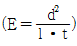
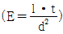
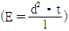
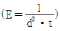
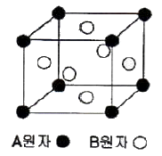
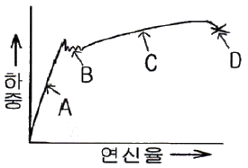
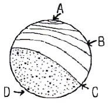
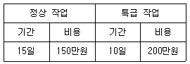

금속재료기능장 (2008-07-13 기출문제)
1과목: 임의 구분
1. 표면은 내마멸성이 좋으며 중심부는 연하고 인성이 있는 기계부품을 제작하기 위하여 금속의 표면에 탄소를 확산시켜 고탄소층으로 만드는 조작은?
- 질화
- 침탄
- 담금질
- 시멘테이션
(정답률: 77%)

2. 다음 중 시효변형에 대한 설명으로 틀린 것은?
- 담금질유의 온도가 높으면 시효변형이 커진다.
- 템퍼링 온도가 낮을수록, 템퍼링 시간이 짧을수록 시효변형이 작아진다.
- 마퀜칭 후 심랭처리와 템퍼링을 반복하면 시효 변형을 작게 할 수 있다.
- 담금질 후 심랭처리한 것은 템퍼링 후 심랭 처리한 것에 비해 시효변형에 대한 수축 속도가 크다.
(정답률: 44%)
3. 탄소공구강의 탄화물을 균일하게 구상화시키는 목적으로 옳은 것은?
- 절삭능 및 내구력을 증대시키기 위하여
- 조직의 조대화 및 취성을 위하여
- 시효변형 및 점성의 증가를 위하여
- 매짐 및 연성을 주기 위하여
(정답률: 80%)
4. 담금질 후처리로서 심랭처리(sub-zero treatment)가 반드시 필요한 이유로 옳은 것은?
- 경화된 강 중의 잔류응력을 증가시키기 위하여
- 경화된 강의 시효경년 변화를 일으키기 위하여
- 경화된 강 중의 잔류오스테나이트를 마텐자이트화 하기 위하여
- 침탄 열처리시 침탄 부분의 잔류오스테나이트를 증가시키기 위하여
(정답률: 78%)
5. 철강재료의 현미경 조직시험에 주로 사용되는 부식제는?
- 왕수
- 염화제이철 용액
- 수산화나트륨 용액
- 질산알콜 용액
(정답률: 60%)
6. 단강품의 결합 중 Ni, Cr, Mo 등을 포함한 특수강의 파단면에 발생되는 미세균열로 파면은 은백색을 띠고 주로 강중에 수소함량이 높았을 때 생기는 결함은?
- 단조터짐(forging burst)
- 백정(white spot)
- 2차 파이프(secondary pipe)
- 편석(segregation)
(정답률: 89%)
7. Fe-C 상태도에서 γ-Fe과 Fe3C의 공정조직은?
- pearlite
- Austenite
- Ledeburite
- Dendrite
(정답률: 73%)
8. 순철의 Ac3 변태에서 결정구조가 변화할 때 (BCC→FCC) 격자상수는 어떻게 변화되는가?
- 커진다.
- 작아진다.
- 변화하지 않는다.
- 가열속도에 따라 달라진다.
(정답률: 70%)
9. 다음 특수강 중 2차 경화(Secondary hardening)가 현저하게 발생하는 강재는?
- 스테인리스강
- 고속도강
- 스프링강
- 알루미늄 합금강
(정답률: 70%)
10. 주조용 알루미늄 합금으로 공정형이며, 나트륨에 의한 개량 처리 효과가 가장 좋은 합금은?
- Al-Co
- Al-Si
- Al-Sn
- Al-Hg
(정답률: 86%)
11. 탄소강 및 Ni-Cr 강의 템퍼취성(temper brittleness)을 방지하기 위한 방법으로 옳은 것은?
- 800℃ 이상에서 뜨임한 후 급랭시키거나, W을 소량 첨가한다.
- 700℃ 이상에서 뜨임한 후 급랭시키거나, Sn을 소량 첨가한다.
- 575℃ 이상에서 뜨임한 후 급랭시키거나, Mo을 소량 첨가한다.
- 200℃ 이상에서 뜨임한 후 급랭시키거나, Al을 소량 첨가한다.
(정답률: 70%)
12. 금속과 비철금속에 대한 설명으로 옳은 것은?
- 황동은 Cu와 Sn의 합금이다.
- 순철은 탄소함유량이 높고, 연성이 작으나 취성이 크다.
- 불변강은 선팽창계수나 탄성률이 급속히 변화하는 특징을 갖는 강이다.
- 주철이 주물로 널리 사용되는 것은 주조서이 좋고, 제조방법에 따라 상당한 강도를 갖기 때문이다.
(정답률: 75%)
13. 금속의 회복과 재결정 현상의 설명으로 틀린 것은?
- 완전풀림 상태에서 금속을 냉간가공하면 전위밀도는 1011∼1012/cm2 정도까지 증가한다.
- 회복단계는 결정립 모양이나 방향에 변화를 일으키지 않는다.
- 재결정 성장의 구동력은 결정입계의 계면 에너지의 감소이다.
- 회복과정에서 서브경계(Subboundary)가 형성되면 강도는 감소된다.
(정답률: 58%)
14. 용융 금속을 물속에 급랭하여 응고시키면 결정 조직은 어떻게 되는가?
- 핵 생성수가 적어져서 조대한 조직이 된다.
- 핵 생성수가 적어져서 미세한 수지상조직이 된다.
- 핵 생성수가 많아져서 미세한 결정립이 된다.
- 핵 생성수가 많아져서 조대한 수지상조직이 된다.
(정답률: 62%)
15. 자분탐상시험 후 반드시 탈자시켜야 하는 경우가 아닌 것은?
- 시험체가 마찰부분에 사용되어 마모가 증가될 우려가 있는 경우
- 시험체가 큐리점 이상으로 열처리되어 자성이 상실될 수 있는 경우
- 시험체의 잔류자속이 계측장치에 영향을 미칠 우려가 있는 경우
- 시험체의 잔류자속이 기계가공을 곤란하게 할 경우
(정답률: 71%)
16. 비파괴시험에 사용되는 Ir-192는 어떤 방사선을 이용하는가?
- 알파(α)선
- 델타(δ)선
- 감마(γ)선
- 엑스(X)선
(정답률: 74%)
17. 방사선투과시험에서 양극에 사용되는 표적(target)의 특성으로 틀린 것은?
- 원자번호가 커야 한다.
- 용융점이 높아야 한다.
- 열전도성이 높아야 한다.
- 높은 증기압을 갖는 물질이어야 한다.
(정답률: 67%)
18. 침투탐상 시험에서 침투 지시 모양의 분류 중 독립침투 지시 모양이 아닌 것은?
- 갈라짐에 의한 침투지시 모양
- 정방향의 침투지시 모양
- 선상 침투지시 모양
- 원형상 침투지시 모양
(정답률: 71%)
19. 산업재해의 원인 중 교육적 원인에 해당하지 않는 것은?
- 안전지식의 부족
- 작업지시가 적당하지 못함.
- 안전수칙을 잘못 알고 있음
- 작업방법에 관한 교육이 충분하지 못함
(정답률: 80%)
20. 포켓 도시미터를 패용하고 작업할 경우 작업자가 지켜야 할 내용 중 잘못된 것은?
- 방사선 작업시 항상 휴대하여야 한다.
- 작업이 끝난 다음에 눈금을 기록해야 한다.
- 눈금이 없어졌을 때 안전관리자에게 통보하고 작업을 계속한다.
- 작업을 시작하기 전에 충전시켜야 하며 그때의 눈금을 기록해야 한다.
(정답률: 83%)
2과목: 임의 구분
21. 다음 중 재해 예방의 4원칙에 해당되지 않는 것은?
- 예방가능의 원칙
- 손실우연의 원칙
- 원인연계의 원칙
- 분석평가의 원칙
(정답률: 81%)
22. 다음 중 설퍼 프린트 시험에 대한 설명으로 틀린 것은?
- 반응식은 MnS+H2SO4→MnSO4+H2S 이다.
- 정편석의 기호는 S1, 주상편석의 기호는 S0로 나타낸다.
- 황전시라고도 하며 강재 중 황의 편석 및 그 분포상태를 검출하는 것이다.
- 철강 중의 황화물과 황산이 반응하여 황화수소를 발생시키고 이것이 브로마이드 인화지의 브롬화은과 반응하여 황이 착색된다.
(정답률: 78%)
23. 후유화성 형광침투탐상시험-습식현상의 탐상 순서로 옳은 것은?
- 전처리→유화처리→침투처리→세척처리→건조처리→현상처리→관찰→후처리
- 전처리→침투처리→유화처리→세척처리→현상처리→건조처리→관찰→후처리
- 전처리→유화처리→침투처리→세척처리→현상처리→관찰→건조처리→후처리
- 전처리→침투처리→세척처리→유화처리→현상처리→건조처리→관찰→후처리
(정답률: 68%)
24. 방사선 투과 시험에서 노출 인자(E)를 구하는 식으로 옳은 것은? (단, I는 관전류 또는 감마선원의 강도, t는 노출시간, d는 선원과 필름사이의 거리이다.)




(정답률: 80%)
25. 시험체 내부의 면상(面狀)결함의 검출 능력이 가장 우수한 것은?
- 형광침투검사
- 초음파탐상검사
- 자분탐상검사
- 전자유도시험검사
(정답률: 87%)
26. 다음 중 취성파괴에 관한 설명으로 틀린 것은?
- 변형속도가 작을수록 취성파괴가 잘 일어난다.
- 온도가 낮을수록 취성파괴가 잘 일어난다.
- 소성변형이 거의 없는 재료에서 취성파괴가 일어난다.
- 3축 인장응력의 조건이 되는 경우 취성파괴가 일어난다.
(정답률: 44%)
27. 한국산업규격에서 정한 강재의 재질 판별법인 불꽃시험에 대한 설명으로 틀린 것은?
- 0.2% 탄소강의 불꽃길이가 500mm 정도 되게 압력을 가한다.
- 시험하는 시험편에 탈탄층, 질화층 및 침탄층 등은 없어야 한다.
- 시험은 항상 동일한 기구를 사용하고 동일한 조건하에서 한다.
- 고합금강에서는 주로 파열의 숫자에 의하여 강종을 구분한다.
(정답률: 58%)
28. 비조질 고장력강에서 높은 강도와 가공성을 갖는 요인으로 틀린 것은?
- 제어압연에 의한 강인화
- 합금원소 첨가에 의한 고용 강화
- 미량의 합금 첨가에 의한 질량효과의 증대
- 미량의 합금 첨가에 의한 결정립의 미세화
(정답률: 68%)
29. 탄소강을 급랭하여 얻는 마텐자이트가 강화되는 이유가 아닌 것은?
- 결정의 미세화에 의해
- 가공성의 향상에 의해
- 급랭으로 인한 내부 응력에 의해
- 탄소원자에 의한 Fe 격자의 강화에 의해
(정답률: 62%)
30. 다음 중 비정질 합금의 특성으로 틀린 것은?
- 균질한 재료이고 결정이방성이 없다.
- 구조적으로는 장거리의 규칙성이 없다.
- 강도가 낮고 연성이 커서 가공경화를 잘 일으킨다.
- 열에는 약하며 고온에서는 결정화하여 전혀 다른 재료가 되어 버린다.
(정답률: 54%)
31. 다음 중 강의 담금질 경화능 시험법에 해당하는 것은?
- 조미니시험
- 에릭슨시험
- 파텐팅법
- 그로스만법
(정답률: 78%)
32. 주철재 압축시험편의 크기가 지름 1cm, 높이 2cm일 때 압축 시험결과 압축강도가 70.06kgf/mm2의 결과를 얻었다면, 이 재료에 가해진 최대하중은 약 몇 kgf인가?
- 5500
- 5900
- 6200
- 6500
(정답률: 58%)
33. 대면각 136도의 정사각형 다이아몬드 압입자로 시험편에 피라미드형 압입자국을 만들어 경도를 측정하는 시험법은?
- 브리넬(Brinell) 경도시험
- 로크웰(Rockwell) 경도시험
- 비커즈(Vickers) 경도시험
- 쇼어(Shore) 경도시험
(정답률: 80%)
34. 탄성구역에서 변형은 세로방향에 연신이 생기면 가로 방향에는 수축이 생기고 가로 세로 치수변화의 비는 그 재료의 고유한 값으로 나타내는 것은?
- Poisson's ratio
- Shear strain
- Young's modulus
- Modulus of rigidity
(정답률: 67%)
35. 순금속에서 액상과 고상이 공존하는 경우 자유도는 얼마인가? (단, 압력은 대기압으로 일정하다.)
- 0
- 1
- 2
- 3
(정답률: 59%)
36. 주철에서 흑연을 구상화하는데 사용되는 합금원소는?
- Mn
- Mg
- Cr
- Co
(정답률: 71%)
37. 한국산업규격에 의한 스테인리스 강재 중 석출 경화계에 속하는 것은?
- STS 202
- STS 316
- STS 403
- STS 630
(정답률: 60%)
38. 다음 중 금속초미립자에 대한 설명으로 틀린 것은?
- 용융점이 금속덩어리보다 낮다.
- 활성이 강하여 여러 가지 화학반응을 일으킨다.
- Fe계 합금 초미립자는 금속덩어리보다 자성이 약하다.
- 저온에서 열저항이 매우 작아 열의 양도체이다.
(정답률: 46%)
39. 그림과 같이 면심입방격자(FCC)로 된 A 원자와 B 원자의 규칙격자 원자배열에서 A와 B 의 조성을 나타내는 것은?

- AB
- AB3
- A3B
- A3B3
(정답률: 71%)
40. 다음 중 릴레이 제어와 비교한 PLC 제어에 대한 설명으로 옳은 것은?
- 시스템의 특성은 독립된 제어장치이다.
- 기계적 접촉이 없으므로 신뢰성이 높다.
- 컴퓨터와 호환성이 없다.
- 소형화하기가 나쁘다.
(정답률: 71%)
3과목: 임의 구분
41. 다음 중 탈탄의 방지책으로 틀린 것은?
- 염욕 속에서 가열한다.
- 탈탄 방지제를 도포한다.
- 고온에서 장시간 가열한다.
- 분위기 가스 또는 진공에서 가열한다.
(정답률: 67%)
42. 가열온도 870℃에서 부품을 담금질하였을 경우의 냉각과정에서 대류 단계의 냉각속도가 가장 빠른 것은? (단, 교반은 없는 것으로 가정한다.)
- 52℃의 담금질유
- 204℃의 염욕
- 24℃의 물
- 28℃의 공기
(정답률: 80%)
43. 다음 중 고주파 경화법에 대한 설명으로 틀린 것은?
- 국부적인 경화에 사용할 수 있다.
- 고주파 경화시킬 수 있는 강종이 제한적이다.
- 경화층의 깊이는 주파수가 클수록 깊게 경화시킬 수 있다.
- 표피효과에 의해서 표면만 급속가열되어 표면만을 경화시킬 수 있다.
(정답률: 45%)
44. 인장시험 곡선에서 루더스 밴드가 나타나는 곳은?

- A
- B
- C
- D
(정답률: 81%)
45. 피로시험 후 그림과 같은 피로파단면을 얻었을 때 초기 크랙이 시작되는 부위는?

- A
- B
- C
- D
(정답률: 61%)
46. 다음 중 황동의 자연균열(Season Cracking)의 방지 대책으로 옳은 것은?
- Zn 30% 이하의 α 황동을 사용한다.
- 황동 표면에 산화물 피막을 형성시킨다.
- 0.1∼0.5%의 As 또는 Sb, 1% 정도의 Sn을 첨가한다.
- 도료 및 Zn을 도금하거나 응력제거 풀림을 한다.
(정답률: 67%)
47. 방사선 외부피폭 방어 3대 원칙에 해당하지 않는 것은?
- 시간
- 투과
- 거리
- 차폐
(정답률: 54%)
48. 다음 중 정적시험(Static test) 방법이 아닌 것은?
- 압축시험
- 전단시험
- 인장시험
- 충격시험
(정답률: 78%)
49. 두께 10mm, 폭 30mm, 길이 200mm의 강재를 지점간 거리가 80mm인 받침대 위에 놓고 3정 굽힘시험할 때 굽힘하중이 1500kgf 이었다면 강재의 굽힘강도는 몇 kgf/mm2인가?
- 45
- 50
- 55
- 60
(정답률: 55%)
50. 현미경으로 금속조직을 검사할 때의 작업 순서로 옳은 것은?
- 시편 채취→마운팅→폴리싱→부식→관찰
- 시편 채취→폴리싱→마운팅→부식→관찰
- 시편 채취→부식→마운팅→폴리싱→관찰
- 시편 채취→마운팅→부식→폴리싱→관찰
(정답률: 78%)
51. 다음 중 펄라이트 가단주철의 제조방법이 아닌 것은?
- 합금첨가에 의한 방법
- 열처리 곡선의 변화에 의한 방법
- 흑심가단주철의 재열처리에 의한 방법
- 구상흑연주철의 열처리에 의한 방법
(정답률: 60%)
52. 다음 중 쾌삭강에 대한 설명으로 옳은 것은?
- 황(S)복합쾌삭강은 칼슘을 동시에 첨가한 초쾌삭강이다.
- 연(Pb)쾌삭강은 Fe 중에 Chip Breaker작용과 윤활제작용을 하며 열처리에 의한 재질개선은 할 수 없다.
- 황(S)쾌삭강은 MnS의 형태를 분산시켜 Chip Breaker작용과 피삭성을 향상시킨 강으로 저탄소강보다 약 2배의 절삭속도를 낼 수 있다.
- 칼슘(Ca)쾌삭강은 쾌삭성을 갖게 되면 기계적 성질이 저하되며, 칼슘계 개재물이 공구의 절삭면에 용착되어 공구를 빨리 마모시킨다.
(정답률: 80%)
53. 다음 중 분위기로의 흡열형 가스의 촉매제 역할을 하는 것은?
- Si
- Cr
- Sn
- Ni
(정답률: 49%)
54. Auto CAD에서 그립의 색상 및 크기 등을 지정하는 명령어는?
- LWT
- ZOOM
- LIMITS
- DDGRIPS
(정답률: 70%)
55. 공정에서 만성적으로 존재하는 것은 아니고 산발적으로 발생하며 품질의 변동에 크게 영향을 끼치는 요주의 원인으로 우발적 원인인 것을 무엇이라 하는가?
- 우연원인
- 이상원인
- 불가피 원인
- 억제할 수 없는 원인
(정답률: 49%)
56. 계수 규준형 1회 샘플링 검사(KS A 3102)에 관한 설명 중 가장 거리가 먼 내용은?
- 검사에 제출된 로트의 제조공정에 관한 사전 정보가 없어도 샘플링 검사를 적용할 수 있다.
- 생산자측과 구매자측이 요구하는 품질보호를 동시에 만족시키도록 샘플링 검사방식을 선정한다.
- 파괴검사의 경우와 같이 전수검사가 불가능한 때에는 사용할수 없다.
- 1회만의 거래시에도 사용할 수 있다.
(정답률: 42%)
57. 어떤 공정에서 작업을 하는데 있어서 소요되는 기간과 비용이 다음 [표]와 같을 때 비용구배는 얼마인가? (단, 활동시간의 단위는 일(日)로 계산한다.)

- 50,000원
- 100,000원
- 200,000원
- 300,000원
(정답률: 78%)
58. 방법시간측정법(MTM: Method Time Measurement),에서 사용되는 1 TMU(Time Measurement Unit)는 몇 시간인가?
- 1/100000 시간
- 1/10000 시간
- 6/10000 시간
- 36/1000 시간
(정답률: 75%)
59. 품질특성을 나타내는 데이터 중 계수치 데이터에 속하는 것은?
- 무게
- 길이
- 인장강도
- 부적합품의 수
(정답률: 84%)
60. 다음 중 품질관리시스템에 있어서 4M에 해당하지 않는 것은?
- Man
- Machine
- material
- Money
(정답률: 79%)